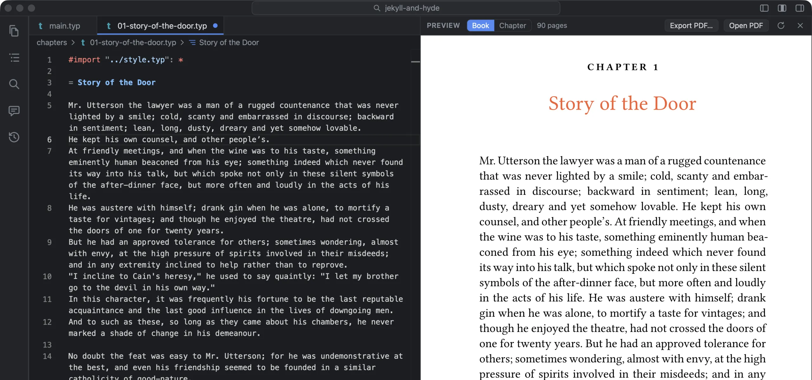
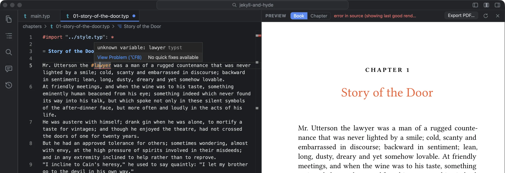
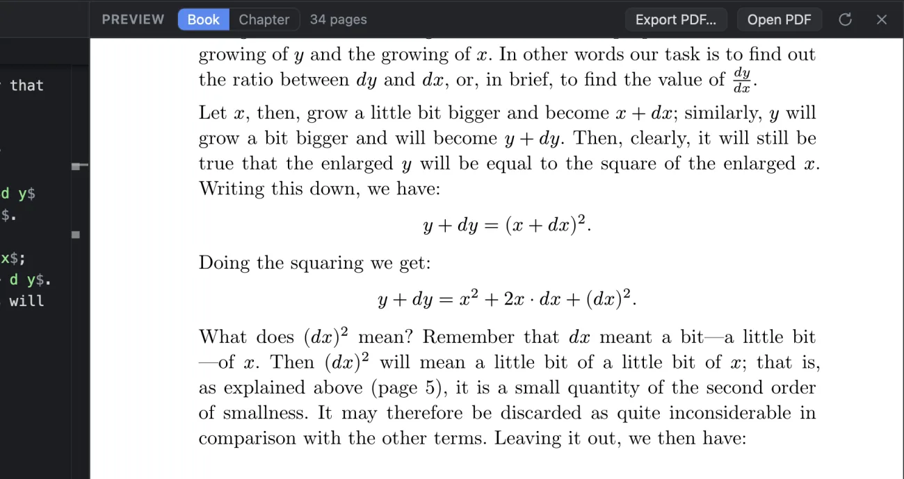
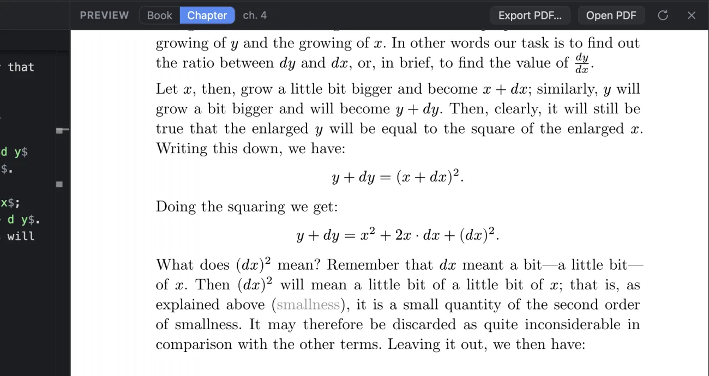

What you see
Type in any chapter and the page changes. Nothing needs saving. The preview follows the cursor: when you click or use the arrow keys, it scrolls to that place on the page 150 ms later, with a brief ripple. While you type, it follows quietly after a pause, with no ripple, so the page doesn’t flash at you.
Click a word on a page and its source opens, selected, with a ring around the cursor, and the editor scrolls so that line sits level with where you clicked. Your eye stays where it was, and the source is beside it. (It used to move only when the line was off screen, so a line already in view could be anywhere.) Select text on a page and the same text is selected in the source, ready to comment on or send to the assistant.
The status bar measures itself as you work: one figure for a keystroke to reach the editor, another for an edit to reach the page, each with its typical and worst times.
Mistakes, without a blank page
A mistake gets a red underline where it is, with Typst’s message on hover, and the status bar counts it (“1 error”; click to go to it). The pages keep showing the last version that typeset, so you can still see the chapter while you fix it, and the preview header says error in source (showing last good render). Typst’s messages are terse. Ask the assistant to fix it in the status bar, or Fix This Error with the Assistant on the right-click menu, explains it in plain words and fixes it.

Just this chapter, for a long book
Typst typesets the whole book on every change. For a few hundred pages that’s quick. For a 743-page book, a keystroke took about half a second to reach the page, and one to five seconds when it pushed text onto another page. Almost all of that was the typesetting, not the drawing.
So the preview can show just the chapter you’re in: Chapter in the Book | Chapter | Cover switch above it, or Settings ▸ General ▸ Preview ▸ Shows. Open another chapter and the preview moves there.


How it works matters, because a chapter usually can’t be typeset on its own. It relies on the main file’s page setup, show rules, fonts and counters. Copying those into a separate preview file goes stale the first time you change the main file. Foreword doesn’t copy anything. It typesets the main file itself, with every other chapter’s include taken out, so the book’s setup applies exactly as written. In each removed chapter’s place it steps the heading counter once for each numbered heading that chapter had, so chapter 4 is still chapter 4. A reference to a label in a removed chapter shows in grey, with the heading’s words, instead of stopping the preview with an error.
Memory, on a long book
Coming back to a long book after a while, the preview used to start again at page 1. The cause was in macOS’s log: WebKit had closed the preview for using too much memory, 11 times in 27 hours on a 739-page book. Tinymist’s renderer drew every page you’d scrolled past into an image at three pixels per point, and kept them all, about 10 MB a page.
Now the preview keeps the pages near the ones on screen drawn and lets the rest go, and draws them again as you scroll to them. It also remembers your place, so if it ever does reload, it comes back to where you were. To keep every page drawn instead, there’s Settings ▸ General ▸ Preview ▸ Pages kept drawn.
How it’s made
One Tinymist process per window does the typesetting; it’s the language server behind Typst’s VS Code extension. Every change in the editor goes to it at once, unsaved. It redraws only the pages in view, as SVG. The preview is a separate web view with its own process, laid over its pane, so a slow redraw can never hold up a keystroke in the editor. Tinymist comes inside Foreword, so the preview works with nothing else installed.
Export
Export PDF… (⇧⌘E) asks where to save, starting where you saved this book’s PDF last time, and says where it went. If the book has code examples that are out of date, it asks first: run them, then export, so a PDF never goes out with stale output. Open PDF (⌥⌘E) opens the last one. The Cover view is the print cover, with guides.
What it doesn’t do
- With one chapter shown, page numbers and references to other chapters are only right in the whole book.
- Jumping from text to page only works where the source maps to text on the page; some lines of code and maths don’t.
- The preview is a separate native view, so it hides while a dialog is open.
- Error messages are Typst’s own; the plain-words version comes from the assistant when you ask.